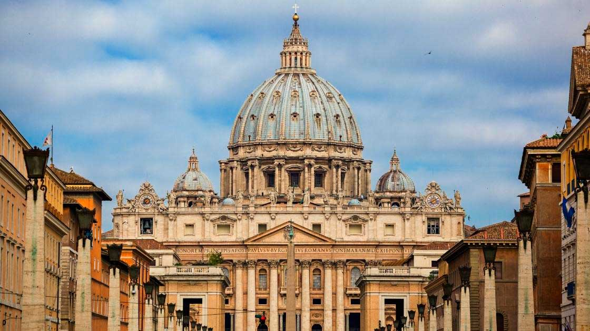
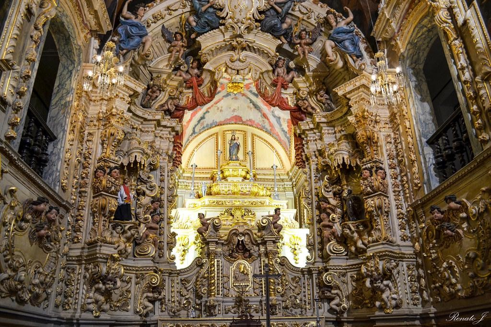

Renascentista

O Renascimento foi um movimento cultural e artístico que buscou reviver os valores e as estéticas da
antiguidade clássica greco-romana. A arquitetura renascentista enfatizava a simetria, a proporção áurea
e a utilização de colunas coríntias, jônicas e dóricas. Grandes domos e cúpulas, como a do Panteão, eram
características marcantes. O Renascimento também valorizava a harmonia e a clareza nas formas
arquitetônicas.
Barroca

O Barroco é conhecido por sua exuberância e ornamentação extravagante. Utilizava curvas dramáticas,
ilusões de movimento e detalhes ornamentados. As fachadas frequentemente apresentavam esculturas e
relevos elaborados. Cúpulas e abóbadas eram comuns, com o uso criativo da luz para criar efeitos
teatrais. O Barroco foi frequentemente associado à Igreja Católica, sendo usado em igrejas e edifícios
religiosos.
Neoclássica
O Neoclássico foi influenciado pela busca pela simplicidade e pela inspiração na arquitetura da Grécia e
Roma antigas. Caracteriza-se pela simetria, proporções clássicas, colunas coríntias e jônicas, e
fachadas elegantes. Edifícios neoclássicos frequentemente refletiam valores de democracia e razão,
tornando-se populares para edifícios públicos e governamentais.